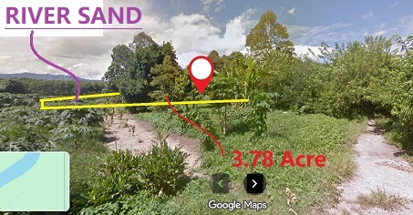

地點 | 便利設施 | 未來發展 | 價格 | 聯絡我們
English |BahasaM | Español | Italiano | Français | Deutsche | 简体中文 | 日本語 | 한국인 | عربي
歡迎來到河沙地皮出售, 丹南鎮沙巴州馬來西亞
3.78英畝，CL地契，永久產權，999年，毗鄰混凝土攪拌站和鋪砌道路
 河沙地皮出售 |
 河沙地皮主入口位於鋪砌道路上 |
|---|